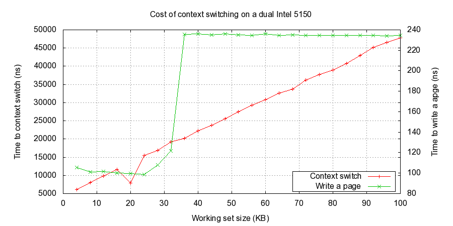
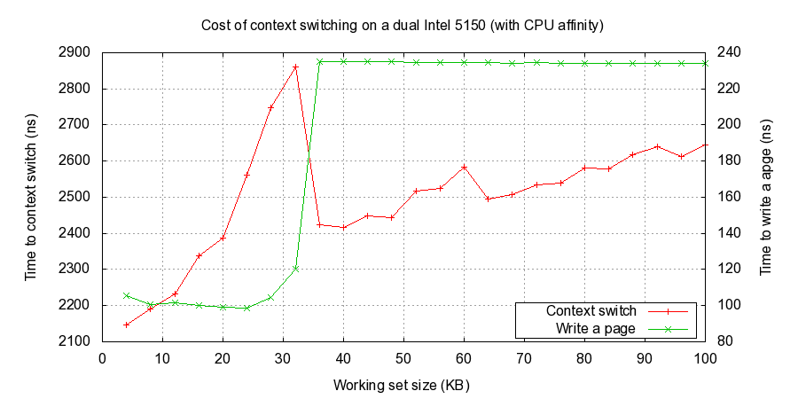

How long does it take to make a context switch?
Table of Contents
1 how-long-does-it-take-to-make-context-switch
http://blog.tsunanet.net/2010/11/how-long-does-it-take-to-make-context.html
作者使用多款CPU来做测试，为了方便我们只看下面这款性能数据。因为主频是在2GHz，所以一个cycle是0.5ns
A dual Intel E5-2620 (Sandy Bridge-EP, based on the Sandy Bridge architecture, aka E5, 2Ghz). The E5-2620 is a hexa-core, has HyperThreading, so the machine has a total of 12 cores, or 24 "hardware threads". Kernel: 3.4.24 x86_64.
第一次作者使用gettid系统调用但是结果失败，原因这个只是测量了系统调用时间(mode-switch)而不是cs时间，以至于从vmstat里面根本看不出cs有显著升高。测试结果是67ns/syscall, 所以一个syscall占用134cycle.
第二次作者使用futex系统调用，使用fork开辟出两个进程然后进程之间相互ping-pong，这样来测试cs. 测试结果中实际上包含了futex系统调用时间，一次context switch有一次futex系统调用。测试结果是～3000ns/context switch. 按照之前67ns/syscall来看，系统调用时间是相对较少的，所以可以认为整个结果就是context switch时间，所以一个context swtich占用6000cycle。 但是作者分析cs之所以或会这么耗时间是因为没有利用好CPU cache以及TLB
所以第三次作者测试设置了cpu affinity. 测试结果是 ~1600ns/process context switch, ~1300ns/thread context siwtch，也就是说3200cycle/process context switch和2600 cycle/thread context switch. 进程切换效率提高了45%。线程切换效率相对进程切换效率高19%，但是开销也还是比较大的。作者还提醒这个测试没有太多的memory footprint, 所以cache命中率是非常高的，在实际应用中这种context switch开销可能会更大。
关于thread和process之间的差别，在文章下面有个comment讲述得很好
As far as the Linux kernel's scheduling is concerned, there are no threads or processes. Everything is just a "task".
If you have a process with one thread, then there is one task that has that PID. If you have a process with three threads, then there are three tasks that share the same PID (but have different TID). But the scheduler doesn't care, all it sees is tasks that want to run, and its goal is to schedule them somewhere.
The only difference is that when you switch from one task to another, and both tasks share the same virtual address space, then no TLB flush occurs.
So yes if you have multiple cores (whether they are all in the same physical CPU or you have multiple CPUs), one core could be executing one thread of a process, and the next time quantum could be given to either another thread of that same process, or another process altogether.
Also possible is the event where one thread is running on a core, and the next time quantum it gets immediately is on another core. This would yield suboptimal performance, especially if both cores are not on the same physical CPU.
对于linux kernel来说需要调度运行任务都被认为是task, 对于我们来说调度最小单元应该就是线程。只要两个task之间使用的是用一个虚拟内存地址的话那么就不会有TLB flush触发。这点可以查看linux kernel相关代码(switch_mm in mmu_context.h)
static inline void switch_mm(struct mm_struct *prev, struct mm_struct *next, struct task_struct *tsk) { unsigned cpu = smp_processor_id(); if (likely(prev != next)) { [...] load_cr3(next->pgd); } else { [don't typically reload cr3] } }
之后作者尝试测试在不同规模memory footprint下cache pollution对context switch的性能影响.下面是没有设置affinity在5150上的测试结果. 可以看到workset大小超过32k之后写入时间没有太大变化，但是cs时间却持续上升。

下面是设置affinity在5150上的测试结果，可以看到workset超过32k之后变化cs时间变化增速很慢

其中5150参数是(5150: L1i & L1d = 32K each, L2 = 4M). note(dirlt): 我没有办法解释为什么出现这些拐点
cs开销在虚拟机里面是在物理机的2.5-3倍，对此解释是guest OS没有办法自己更新page table, 只能让交给hypervisor来处理，这样增加了两次context switch. Intel在Nehalem架构CPU里面增加EPT(Extended Page Table)特性主要就是解决这个问题，可以让guest OS自己更新page table.
文章最后解释了为什么async/non-blocking会更加高效。cache & TLB hit rate不是这方面的原因，因为这些不管是async还是sync方式都会遇到。可以需要注意cache & TLB hit rate对于性能影响，相对与context switch带来的开销要大很多，所以这方面依然是性能优化需要着重的方面。基本上async已经降低了context switch带来的开销，但是我们依然可以通过一些手段（比如尽量让每个调度上的task跑满时间片）来进一步降低context switch带来的开销。
Context switching is expensive. My rule of thumb is that it'll cost you about 30µs of CPU overhead. This seems to be a good worst-case approximation. Applications that create too many threads that are constantly fighting for CPU time (such as Apache's HTTPd or many Java applications) can waste considerable amounts of CPU cycles just to switch back and forth between different threads. I think the sweet spot for optimal CPU use is to have the same number of worker threads as there are hardware threads, and write code in an asynchronous / non-blocking fashion. Asynchronous code tends to be CPU bound, because anything that would block is simply deferred to later, until the blocking operation completes. This means that threads in asynchronous / non-blocking applications are much more likely to use their full time quantum before the kernel scheduler preempts them. And if there's the same number of runnable threads as there are hardware threads, the kernel is very likely to reschedule threads on the same core, which significantly helps performance.
设想scheduler为每个task分配10ms的时间片，但是每个task只运行了其中0.03ms就被切换出去。而一旦切换就会产生context switch, 话费在0.03ms上。也就是说整个CPU只有50%时间在做真正的工作，而剩下50%时间在cs. 而async就是希望每个task一旦被分配到时间片就可以完全利用，这样cs时间比率就在0.3%上。将线程数目限制和hardware threads相等的话，还可以减少对cache & TLB hit rate带来的影响提升性能。